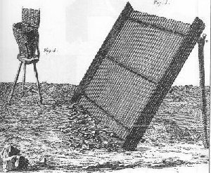
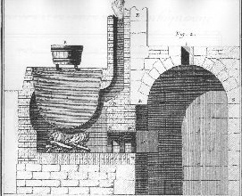

Notes
annexées : NB
: les notes sont de Théodore
Baron
-
[a]
on est convaincu aujourd'hui par expérience que le nitre est
un
sel parfaitement neutre qui ne fait point d'effervescence, ni avec les
alkalis, ni avec les acides...L'épithète de sel
aérien
pourroit mieux convenir au salpêtre ; car suivant la
théorie
de Sthal, la production de ce sel dépend de ce que l'esprit
universel
répandu dans
l'atmosphère,
& qui est de la nature de l'acide vitriolique, venant
à se
déposer
dans les pierres ou des terres qui sont chargées de
matières,
soit animales, soit végétales,
réduites en
pourriture,
il se combine avec les sels volatils & les huiles
fétides
que
la putréfaction développe dans ces sortes de
matières...
[b]
On vient de voir dans la note précédente que le
salpêtre
ne peut point être mis au rang des sels volatils, puisqu'il
résiste
à l'action du feu la plus violente, sans se dissiper en
l'air.
Quant
au sel gemme qu'il contient, ce sel ne lui est que
mêlé
&
confondu, sans faire partie de son essence, & il peut s'en
séparer
aisément, ce qui ne sert qu'à rendre le
salpêtre
plus
pur ; mais la quantité de sel
marin
qui est allié au salpêtre n'est pas aussi
considérable
que l'Auteur le pense...
[c]
Cette espèce de salpêtre n'est
préférable au
commun, que parce qu'il est exempt de tout mélange avec le
sel
marin...Or,
plus il y a de ce sel mêlé avec le
salpêtre &
moins
celui-ci est bon pour faire de la poudre à canon., moins
aussi
est
fort l'esprit de nitre que l'on tire par la distillation, parce qu'il
est
affaibli par le mélange de l'esprit de sel qui s'est
élevé
avec lui dans la distillation, & qui en forme une eau
régale.
[d]
...il est au contraire bien certain que l'esprit aice qui fait partie
de
ce sel est chargé d'une quantité surabondante de
matière
de feu...autrement dit phlogistique...
-----------------------------------
[a]
La purification du salpêtre consiste à lui enlever
toutes
les parties étrangères
généralement
quelconques
avec lesquelles il se trouve mêlé, & non
pas à
le dépouiller d'une partie de son sel
fixe, ce
qui ne pourrait pas se faire sans
le décomposer : aussi le sel fixe dont parle l'Auteur ne
faisoit-il
point partie du salpêtre, ce n'est que du sel marin qui lui
étoit
confondu, mais sans faire partie de son essence.
[b]
Ce que l'Auteur appelle ici la première purification du
salpêtre
est, à parler exactement, la formation même, ou la
production
du salpêtre ; car il ne faut pas croire que ce sel
existât
tout formé dans la lessive
des platras,
& que l'addition des
cendres
ne serve qu'à dégraisser cette lessive, &
à
mettre
à nu le salpêtre qu'elle contient. Les cendres ont
encore
un autre usage beaucoup plus important dans l'occasion
présente
; elles fournissent par leur alkali
fixe
une nouvelle base à l'acide nitreux, qui dans les platras
n'étoit
engagé qu'avec un alkali volatil, & formoit avec lui
un sel
ammoniacal nitreux bien
différent
du
vrai salpêtre, ou salpêtre ordinaire, dont la base
est un
alkali
fixe...
[c]
On appelle beaucoup plus communéent Eau-Mère
de salpêtre, une
liqueur rousse,
amère
& onctueuse qui reste après les dernières
crystallisations
du salpêtre. Il est vrai que la lessive de platras se
réduiroit
par évaporation en une liqueur semblable, même
sans qu'on
l'eût fait passer sur les cendres pour la changer en une
dissolution
de salpêtre...car ce n'est qu'après cela que cette
lessive,
qui ne contenoit auparavant qu'un sel ammoniacal nitreux, peut porter
le
nom de dissolution de salpêtre...
[d]
C'est ce sel même...qui constitue en entier la base
fixe du salpêtre...il
la fournit en
s'unifiant à l'acide nitreux contenu dans le sel ammoniacal
nitreux
de la lessive des platras, & formant avec cet acide le
salpêtre
qui n'existoit pas auparavant dans cette lessive ; c'est donc une
nouvelle
combinaison qui se fait dans cette occasion par l'intermède
de
l'alkali
fixe qui dégage l'alkali volatil avec lequel
étoit
lié
l'acide nitreux, & le substitue lui-même à
la place de
cette base volatile ; mais cet alkali
fixe
ne change pas pour cela de nature, comme l'Auteur l'avance ; il perd
à
la vérité ses propriétés,
mais il est
toujours
prêt à les reprendre aussitôt que l'on
lui
enlève
l'acide nitreux qui lui étoit incorporé, c'est ce
qui
arrive
dans l'opération du nitre
fixé dont
il sera parlé dans la suite.
[e]
Ce sel...est pour la plus grande partie un vrai sel marin
mêlé
avec quelque peu de salpêtre ; de-là vient que
l'esprit
acide
qu'on en retire par la distillation avec l'intermède des
matières
vitrioliques est une espèce d'eau régale.
[f]...ces
sortes de matières ne fournissent qu'une portion de
matériaux
propres à former le nitre, & que l'air de son
côté
fournit l'autre portion ; sçavoir son acide
universel, comme
expliqué dans la
note
[a].
[g]
Cela n'arrive ainsi que parce que ce dernier sel est de
véritable
sel marin...le salpêtre crystallise en colonnes, à
six
pans
alternativement inégaux entr'eux, de manière
qu'il y en a
trois plus larges, & trois plus étroits. Chaque
colonne,
lorsque
la crystallisation est bien régulière, se termine
à
chaque extrmité, par une pyramide coupée aussi
à
six
faces alternativement inégales entr'elles ; & et de
plus,
cette
colonne est percée de part en part dans son centre par un canal ou
un tuyau qui s'étend dans toute sa longueur depuis le sommet
d'une
pyramide jusqu'à celui de la pyramide opposée.
[h]
De-là vient la nécesité de réitérer
plusieurs fois la
purification du
salpêtre
pour les opérations de Chymie, où la
présence de
sel
marin pourroit rendre suspects les nouveaux
phénomènes
qui
se présentent quelquefois dans ces opérations.
Cependant,
on peut regarder un salpêtre comme bien pur &
parfaitement
privé
de tout sel marin, lorsqu'on a purifié deux ou trois fois le
salpêtre,
qu'on appelle de la troisième
cuite,
surtout si la crystallisation de ce sel est aussi
régulière
qu'on la décrite dans la note
précédente.
[i]
...le salpêtre se décompose plus
aisément par une
ébullition
logtemps continuée, que le sel marin qui lui est toujours
confondu...
[k]
Cela ne peut pas avoir lieu pur toutes sortes de sels
indifféremment,
car M. Rouelle a fait voir dans un Mémoire
imprimé en
1744
parmi ceux de l'Académie, qu'il y a plusiers sels qui
crystallisent,
sans qu'il se forme de pellicule à la surface de leur
dissolution,
& qu'il y en a même qui ne crytallisent jamais qu'au
fond de
leur dissolution ; tel est, par exemple le sel de Glauber [sulfate de
soude],
& généralement tous les sels qui
retiennent beaucoup
d'eau dans leur crystallisation, & qui en exigent
très peu
pour
leur dissolution.
[l]
...mais pour ce qui du tems que les sels mettent à se
crystalliser,
cela dépend uniquement de la quantité d'eau qui
les tient
en dissolution...la formation des crystaux doit toujours commencer au
premier degré d'évaporation
[m]
cf. note g
[n]
Ce prétendu sel fixe n'est autre chose que de vrai sel
marin qui se
trouve toujours
mêlé
avec le salpêtre, & que l'on ne peut en
séparer
entièrement
que par des purifications, c'est-à-dire, des dissolutions,
filtrations, & crystallisations
répétées.
[o]
C'est qu'alors il contient beaucoup moins de sel marin, qui est un sel
qui a la propriété de se charger de
l'humidité de
l'air. La seconde purification du salpêtre dont il est
parlé,
est ce qu'on nomme à l'Arcenal de Paris, la troisème
cuite du
salpêtre, en comptant pour
la première cuite l'évaporation que l'on fait de
la
lessive
des platras après qu'elle a passé à
travers les
cendres,
& qu'elle a été
décomposée par leur sel
alkali fixe dont elle s'est chargée.
Commentaire
1
Cette
préparation
du salpêtre contient de nombreux passages où l'on
peut
presque
lire textuellement ce qu'indiquent de nombreux adeptes [Fulcanelli,
E. Canseliet, Artephius, etc.].
D'abord,
à l'époque, on croyait qu'une partie du nitre se
tirait
de
« l'esprit
universel »
contenu
dans l'air ; ensuite, le processus de cristallisation passe,
à
chaque
fois, par l'apparition d'une écume qui signale les premiers
cristaux.
Enfin, cette écume noire qui apparaît au
début du
travail
dans la chaudière semble avoir quelque rapport avec la
« putréfaction
» initiale signalée par les auteurs modernes et
que l'on
nomme
tête de corbeau. Ainsi est-il possible d'assimiler le
salpêtre
à la rosée de mai des vieux auteurs par ce
principe de
«
captation » de « l'esprit universel » tel
qu'on le
comprenait
encore à l'époque de N. Lémery.
E.
Canseliet
donne,
dans la préface aux Demeures
philosophales,
une explication qui nous semble adaptée à ce que
décrit
Lémery :
"...nous
avons parlé de cette matière, symboliquement
désignée
par le fumier, que les chimistes connaissent bien, lors même
qu’ils
la considèrent comme un négligeable
résidu et
qu’ils n’en fassent aucun
cas...Pourtant, c’est bien cette substance, en apparence immonde, que
les
Philosophes dénomment bave
du dragon et
dont ils affirment qu’elle
est
à la fois très vile et très
précieuse. "
Canseliet
nous précise
que la couleur de cette matière est noire, d’odeur
cadavérique
(à
entendre dans un
sens
allégorique, comme le disait Nicolas Flamel « ayant
reconnu
la senteur forte »,
c’est-à-dire le bon sentier, la
bonne
voie : stibiaè
stibine)
et a l’aspect d’une écume infecte,
bulleuse et putride. Il s'agit, à proprement parler, du
Caput
mortuum
ou « tête de mort » obtenue dans la
préparation
de l'aqua sicca. Nous en parlons dans la section relative au tartre
vitriolé.
Un
autre
recoupement
nous est donné par Philalèthe (Introïtus,XV,
5 : De la
purgation accidentelle du Mercure et
de
l’Or)
:
" Mais
outre cette purgation essentielle, il faut au Mercure une purification
accidentelle pour laver les fèces
externes que
l’opération de notre
vrai
soufre a rejetées du centre à la surface..."
qui est
à
rapprocher une fois encore de ce que Canseliet nous dit :
"De couleur
noire,
d’odeur cadavérique, elle
s’élève
du fond de la mer hermétique et s’étend
à la
surface,
comme la sanie sort d’une plaie..."
Là
encore,
on peut relire ce texte à la lumière de ce que
rapporte Lémery.
Voyons ce que dit Artephius
de
cette
écume :
"...et
en peu de temps, vous verrez s'élever une liqueur semblable
à
une huile surnageante semblable à une écume
[écume
: spuma, qui peut renvoyer
aussi
à l'oxyde de plomb PbO fondu et cristallisé,
crasse :
peut
renvoyer à squalor : aspect hérissé
avec des
aspérités,
scorie : résidus de métaux].
Ramassez cela avec une cuillère [cocchlea
: renvoie à coquille ou cuillère ; il pourrait
s'agir
d'un
appareillage spécial pour récupérer
l'écume
car une acception du terme est la vis d'Archimède par
laquelle
on
élève l'eau- trua : écumoire, cuiller
dont on se
sert
pour enlever la crasse qui se forme sur certains métaux]
ou trempez-y une plume [penna :
c'est bien
une plume mais un autre sens est flèche]
; et continuez jusqu'à ce que plus rien ne surnage autant de
fois
qu'il le faudra dans une journée ; évaporez l'eau
grâce
à une chaleur douce, c'est-à-dire l'humide
superflu du
sel
de Jupiter [doit
renvoyer à l'Esprit universel],
et il restera la quintessence [substance
propre],
détenant les pouvoirs de l'or [renvoit
aussi à rayonnant, beau, splendide : stilboV]
sous forme d'une huile blanche incombustible. Dans cette huile, les
philosophes
ont placé leurs plus grands secrets ; elle
déborde de
douceur
[ou :
unie]
et
est d'un grand intérêt pour améliorer
les
afflictions
dues aux tourments."
On
peut voir
aussi
une analogie avec un passage de Philalèthe (Introïtus,
VI)
dont nous redonnons ici la note de renvoi 22
: La nymphe Vénus, en grec, est Aphrodite
à laquelle elle fut assimilée à partir
du IIe
siècle
av. J.-C. En fait, par calembour, Aphrodite a valeur d'écume
(du
grec ajroV).
Donc, à chaque fois que Vénus ou Aphrodite sont
citées
par les alchimistes, on doit penser à une écume
qui
surnage.
La naissance d'Aphrodite est bien connue : Cronos, à
l'instigation
de sa mère, Gaea, mutile de sa harpê son
père

FIGURE
VI
(naissance
de Vénus, S. Botticelli, c. 1485)
Ouranos
et
jette
dans la mer les débris de la virilité paternelle.
Ceux-ci
surnagent et il s'en dégage une blanche écume
d'où
naît Aphrodite. Portée par le souffle de
Zéphyre,
elle
aborde le rivage de Chypre où elle est parée de
riches
vêtements
et de bijoux merveilleux. C'est, au vrai, l'exacte description du
résultat
progressif d'unecoagulation.
On peut, par analogie, y voir la description de cette pellicule qui
annonce
la formation des cristaux ; quant aux
réitérations, elles
s'accordent fort bien avec les textes modernes et nous en parlons dans
la section sur les gardes
du corps
de François II.
Fulcanelli (Les Mystères,
p.104) nous
dit par ailleurs que la
putréfaction se déclare quand la noirceur
apparaît et que c'est le signe d'un travail
régulier et
conforme
à la nature. Il cite aussi un manuscrit anonyme du XVIIIe
siècle (La Clef du
Cabinet
hermétique)
:
"Quelques
Philosophes l'ont aussi marqué. Morien
dit : il faut qu'on y remarque quelque acidité et qu'elle
ait
quelque odeur
de sépulcre.
Philalèthe dit
qu'il faut qu'elle paroisse comme des yeux de poisson...et qu'il
paroisse
qu'elle écume
; car c'est une marque que la matière se fermente et qu'elle bout.
Cette fermentation...se fait par notre feu secret, qui est le seul
agent
qui puisse ouvrir, sublimer et putréfier".
Cette
écume
contracte d'étroits rapports avec un des arcanes majeurs de
l'oeuvre
: le Caput
mortuum
; voici ce qu'en dit E. Canseliet dans son Alchimie
expliquée sur ses Textes classiques
:
"Maintenant,
sans rien prendre à l'élément solide,
de ce qui
constitue
sa richesse cachée, ignée et sulfureuse, il faut
pourtant
en extraire la saline et visqueuse humidité qui, tout
d'abord,
s'opposerait
à sa calcination...L'opération est tout
à fait
réalisable
par voie sèche, bien qu'elle reste tributaire du
très
puissant
catalyseur dont l'artiste expérimenté dispose..." (p.
206)
et plus
loin :
"L'épais
magma, qui a été recueilli de l'industrieuse
calcination
du caput, a été calciné dans le
têt à
rotir et s'y est transformé en une poudre
érugineuse,
grasse
[cette
expression apparaît aussi
dans la Toison
d'Or,
in Alchimie,
p. 200] et
peut-être isotope du colcotar..." (p.237)
Le
salpêtre
était autrefois connu sous le nom de aphronitrum [aphronitrum]
et contracte ainsi, par cabale, des rapports avec Aphrodite
; on trouvera d'ailleurs dans notre 3ème
schéma
d'élaboration de la Pierre toute
précision
à cet égard. Il apparaît ainsi possible
que le
symbole
Vénus-Aphrodite voile le salpêtre. Quant
au Caput,
il correspond au tartre
vitriolé.
La relation au colcotar
est trouvée dans le Cours de
Chymie
de N. Lemery
:
"Il
reste dans la cornue une masse rouge, de laquelle on peut se servir,
comme
du colcothar,
pour un adstringent" [p.303]
On
trouve
ensuite
dans laClef
X des Douze
clefs de philosophie
attribuées à
Basile
Valentin une allusion à l'écume :

FIGURE
VII
Le
symbolisme
dégagé
par cette gravure est complexe ; on y retrouve le symbole de l'eau qui
circonscrit un double cercle ; aux trois angles de ce triangle
à
base supérieure sont posés les symboles du
Soufre, de la
Lune (1)
et du Mercure. Du
moins peut-on en douter pour la lune, représentée
en son
premier quartier ; dans son traité sur l'Eau
divine, Zosime
de Panopolis a représenté la lune dans son
dernier
quartier
et le Mercure
par le premier quartier. On se rappelle aussi de la planche I
du Mutus
Liber
dans laquelle Altus a fait représenter
la lune aussi dans son dernier quartier [il
s'agirait alors du principe féminin et non du Mercure
proprement
dit] ; or
la gravure
représente
l'allégorie du Mercure sur le point de s'animer. C'est bien
ce
que
constate E. Canseliet :
"Pour
compléter le stratagème qui transforma en
énigme
ses
références à la bible, et dans le
même
dessein
de prudente dissimulation, l'anonyme Altus a
représenté l'astre
des nuits en son dernier
quartier, philosophiquement contraire
à
toutes les opérations."
L'inscription
porte
:
"Je
suis né d'Hermogène.Hypérion
m'a choisi. Sans Iamsuph,
je suis contraint de périr."
J. Van
Lennep
écrit
dans son Alchimie
que « Iamsuph
» reste énigmatique. Nous proposons de
décomposer
Iamsuph
en spuma (écume) qui renverrait à Aphrodite (1,2).
Le double cercle fait référence à la
double roue (1,2,3,4)
évoquée par Fulcanelli qui fait suite aux travaux
d'Hercule.
Toutefois, si cette écume représente bien celle
dont
parlent
les Adeptes, on n'aura garde d'oublier que les alchimistes ont
masqué
sous une même opération deux techniques similaires
;
Fulcanelli
nous parle, en effet (DM, II,
p. 279) :
"De
ces noces chimiques, un enfant
métallique
doit naître et recevoir l'épithète
d'androgyne...Mais
en ce lieu gît un secret que nous n'avons point
découvert
chez les meilleurs et les plus sincères de nos
auteurs...C'est
que
les philosophes ont habilement
soudé
deux ouvrages successifs en un seul, avec
d'autant plus d'aisance qu'il s'agit d'opérations semblables,
conduisant à des résultats
parallèles..."
pour
nous
prévenir
de ce que cette écume et cette pellicule peuvent
être
observées
à deux époques différents du
magistère ;
d'une
part, lors de la préparation du 1er
Mercure, d'autre
part lors de la Grande Coction, à la fin du 3ème
oeuvre. Il est même possible qu'une autre écume
soit
observée
à un stade plus tardif de l'élaboration du
Mercure, au
stade
de la préparation de l'alkali
fixe.
C'est ce que semble dire Fulcanelli quand il s'exprime
sur le corbeau [le symbole
du
Caput mortuum] :
"Mais
cette noirceur...ne se manifeste pas seulement au cours de la
coction...Selon
Le Breton, « il y a quatre putréfactions dans
l'Oeuvre
philosophique...la
troisième, dans la seconde conjonction, qui se fait de l'eau
pesante avec son sel..."
Penchons-nous
sur
cette eau pesante et ce sel : déjà Cyliani nous
en parle
dans l'introduction entièrement cabalistique de son Hermès
Dévoilé
:
"...Né
d'une mère chérie et d'un père respectable
et très instruit, qui occupait une place très
honorable
dans
la société..."
Le
père
respectable renvoie à une terre grasse [gravis]
qui ne peut faire référence qu'à la
chaux (grasse)
et instruit à dégrossi [eruditus]
et à purgé, nettoyé [erudero].
Fulcanelli y fait allusion (Les
Mystères, p. 106) :
"L'auteur
anonyme des Préceptes du Père Abraham dit :
« il
faut
tirer cette eau
primitive
et céleste du corps où elle est, et qui s'exprime
par sept
lettres selon nous, signifiant la semence première de tous
les
êtres,
et non spécifiée ni
déterminée dans la
maison
d'Ariès
pour engendrer son fils...et c'est le dissolvant universel
»..."
Par eau
primitive,
il faut entendre Mercure original [archetypum]
ou Mercure singulier [n'oublions
pas que les Adeptes disent toujours : une seule substance, un seul
Mercure
-stilbwnè
la planète Mercure, un seul fourneau...]
; défilent alors -par cabale phonétique- Arche
renvoyant
à Jupiter, et d'autres mots auxquels nous renvoyons le
lecteur
intéressé
à la section lexique.
nous donnerons ici quelques acceptions :
arche
: renvoie au mont Ararat et aussi à archée
= arché, fille du second Jupiter ; l'arche de Noë
ou arca
renvoie à Arcas, fils de Jupiter et de Callisto (è
ours et étoile pôlaire). Arcas renvoie aussi
à
Mercure
et de façon générale, toute
référence
à une voûte
vaut pour l'arc aussi appelé arc-en-ciel (arcus) - vase
sacré
: urne funéraire
= arcula, diminutif de arca.
L'étoile
pôlaire est cette étoile sur laquelle les Mages se
sont
guidés
et elle a valeur de point central -référence au
pôle
où convergent tous les méridiens- dont
Philalèthe
(Introïtus,
IV)
nous a dit :
"En
outre, je déclare que notre Aimant a un centre
caché,
où
gît une abondance de sel2.
Ce sel est un menstrue dans la sphère de la Lune3,
et peut calciner4
l'or. Ce
centre, par une inclination originelle, se tourne naturellement vers le
pôle5,
où la
vertu
de notre Acier est élevée par degrés.
Au
pôle,
se trouve le coeur de Mercure6,
qui est un vrai feu où est le repos de son Seigneur.
Naviguant
sur
cette vaste mer7,
pour
aborder
à l'une et à l'autre des Indes, il gouverne sa
course par
l'aspect de l'étoile du nord que notre Aimant te fera
paraître."
Cet
aimant,
Fulcanelli,
nous en a parlé aussi en citant De
Pernety (Dom Pernety : Dictionnaire
mytho-hermétique
expliquant les Allégories fabuleuses des Philosophes
hermétiques)
:
"Les
Adeptes disent qu’ils tirent leur acier du
ventre d’Aries, et
ils appellent aussi
acier
leur aimant."
Les
propriétés
magnétiques du fer sont connues depuis des temps
immémoriaux
et l'aimant [magnes]
est connu de toute antiquité. Il doit sa
célébrité
à un phénomène d'attraction propre
à
attirer
l'attention même du sauvage. Aussi les anciens auteurs
sont-ils
pleins
des merveilles de l'aimant,
dont le nom, magnes,
viendrait selon Nicandre, d'un nommé Magnès qui,
le
premier,
découvrit l'aimant sur le mont Ida. Ce Magnès
était,
paraît-il, un berger
qui, en menant paître son troupeau, fut tout à
coup
involontairement
retenu au sol par les clous de se semelles et le fer de sa houlette [Pline,
XXXVI, 16]. Les
Anciens admettaient
deux repères d'aimants, l'aimant mâle et l'aimant
femelle,
celui-ci était de couleur noire et
réputé le plus
faible. Enfin, les Anciens n'ignoraient pas que l'aimant communique sa
propriété au fer et qu'on peut l'employer dans la
fusion
du verre [c'est de
magnes
que
vient le nom de manganèse ou magnésie noire].

FIGURE
VIII
(frontispice
du De Lapide philosophorum,
Lambsprinck, Museum hermeticum,
1677)
Mais,
pour ce
qui
nous concerne, seule l'allégorie compte et il est clair que
l'aimant
des sages n'a aucun rapport avec le fer, mais bien plutôt
à
un composé fixe qui doit forcément
naître de la
volatilisation
de quelque Mixte et avoir quelque rapport avec les Aigles volantes de
Philalèthe.
Ce composé fixe ne peut être autre chose qu'un
alkali [autre
que l'ammoniaque, volatil].
C'est
ici
que nous trouvons la liaison entre l'eau pesante et le Sel. Cette
seconde
conjonction [qu'évoque
Le Breton] est
donc de nature
complexe,
à la fois sulfureuse par l'eau pesante [eau
ignée] et
mercurielle par le
sel [feu aqueux]
; cette conjonction s'inscrit entre Mars et Vénus ; en
effet,
l'eau
pesante est imprégnée de la nature du
Bélier qui
cache
en son ventre l'acier magique et le sel par le Taureau...mais
arrêtons
là cet ésotérisme de mauvais aloi et
reprenons
l'exposé
sous un exotérisme plus consistant. En fait, de quoi
s'agit-il
ici
? Nous avons vu dans d'autres sections que les alchimistes avaient
donné
le nom de soufre ou de mercure, non pas réellement
à une
substance en soi mais selon l'aspect que prenait cette substance, de
forme
et de complexion sèche ou humide, ou ce qui revient au
même,
fixe ou volatile ; et bien, ici, il s'agit ni plus ni moins que
d'obtenir
l'amalgame
hermétique correspondant
à
la conjonction de l'eau pesante et d'un sel. Cette eau pesante [que
l'on pourrait traduire par sédiment, résidu]],
nous en avons déjà parlé dans la
section sur le tartre
vitriolé
et n'y reviendrons pas ici. Nous avons aussi
parlé du sel qui doit, notez-le bien, être compris
sous
une
forme « vulgaire » en tant que substance chimique
parfaitement
définie. C'est de la préparation de ce sel -telle
qu'elle
était réalisée à
l'époque de Newton
et de Nicolas Lemery-que nous allons parler à
présent,
car
la préparation
moderne,
donnée en des termes qui s'apparentent
à
ce qu'E. Canseliet nomme spagyrie, en éteint le symbolisme
traditionnel
et nuit à la compréhension de
l'allégorie.

FIGURE
IX
Le
symbolisme
qui s'y
rattache peut, selon nous être ainsi analysé :
le miel
(en latin, mel) se dit en grec ioV
[suc
des abeilles, dont les autres acceptions sont : rouille de fer,
vert-de-gris]
et renvoie à des oxydes dont E. Canseliet nous parle
longuement
dans son allégorie sur l'ionosphère
qu'il développe dans ses Etudes
alchimiques.
Il reste à parler de ce nitre cubique
évoqué dans
le Cours de
Chymie
de N.
Lémery
; dans la section sur la prima materia, une pierre
cubique
est évoquée dont on a initialement
pensé
qu'elle désignait l'alun puisqu'il cristallise
sous forme
de cubes. Mais un point important doit être noté : les
sels d'alumine
ne deviennent solubles que par la fusion avec du carbonate
de soude. Cette
information est capitale
et
n'en rend donc que plus importants les indices -cryptés le
plus
souvent- que les Anciens et les Modernes ont pu nous laisser. ainsi,
Cyliani,
dans son Hermès
Dévoilé,
nous dit-il :
"Je
vis alors un nuage qui sortait du sein de la terre, qui nous enveloppa
et nous transporta dans l'air. Nous parcourûmes les bords
de la mer
où j'aperçus de
petites bosses.
La nuit survint, le ciel était très
étoilé,
nous suivions la voie lactée en nous dirigeant à
l'étoile
polaire."
Ces
bosses
feraient-elles
allusion aux paquets agglomérés de varech
où se
trouve
la précieuse Salicornia
?
Voici
encore
des
extraits sur la préparation du salpêtre [Chimie
inorganique, Livre III. Métaux,
Henri Debray] :
Azotate
de potasse
On
le connait dans l'industrie sous les noms de nitre ou de
salpêtre.
Il cristallise en prismes réguliers à six pans,
ordinairement
striés et creux; sa saveur est fraiche et
très-salée.
Il fond au rouge et se décompose à une
température
plus élevée, en dégageant de
l'oxygène, il se transforme alors en azotite, que l'on peut
séparer
de l'azotate non décomposé par l'alcool
concentré
qui dissout seulement l'azotite. Il active au rouge la combustion du
charbon,
du soufre, du phosphore, du fer, du zinc et de beaucoup d'autres
métaux;
il agit dans la plupart des cas par son oxygène et par son
alcali.
Sa solubilité croit rapidement avec la
température.
Au-dessus
de 97,7°C, l'eau le dissout en toutes proportions.
Etat
naturel - Le salpètre
est abondant dans la nature. On le
trouve
effleuri à la surface du sol de certains pays, pendant la
saison
sèche, principalement au Bengale, en Égypte,
à
Ceylan
et dans les parties chaudes de l'Amérique. Les murs de nos
cours,
de nos caves, se recouvrent aussi de salpétre ; il existe
également
en proportion notable dans les plâtras provenant des
démolitions
des parties inférieures, plus humides, des vieux
bâtiments.
Enfin on le produit artificiellement dans plusieurs contrées
du
nord de l'Europe.On mélange des terres meubles, contenant de
la
potasse et de la chauxr avec des matières organiques en voie
de
décomposition, ordinairement du fumier. On construit avec ce
mélange,
qui doit être perméable à l'air, des
murs
étroite
soumis à l'action des ventent garantis de l'eau du ciel par
un
toit
; on les humecte avec de l'urine, afin de remplacer l'eau que
l'évaporation
incessante enlève. Au bout de plusieurs années,
les
azotates
formés viennent s'effleurir sur la face du mur la plus
exposée
à l'action desséchante du vent ; on
enlève ces
portions
de mur, et on les lessive pour en retirer le nitre.

FIGURE
X
(extraction
du salpêtre, préparation des plâtras,
in Encyclopédie
de Diderot et d'Alembert, 1772)
Théorie
de la nitrification - Les
chimistes admettent que sous l`influence
de l'oxygène de l'air et des corps poreux le carbonate
d'ammoniaque
peut se transformer en acide azotique qui se combine avec les bases
terreuses
en présence desquelles s'effectue le
phénomène.
Les
expériences de M. Kulhmann, sur la transformation de
l'ammoniaque
en acide azotique par l'oxygène en présence de la
mousse
de platine, ne laissent aucun doute sur la possibilité d'une
telle
transformation. On peut même admettre, d'après des
expériences
de M. Clocz et celles de M. P. Thenard, que l'oxydation directe des
matières
azotées puisse produire ce phénomène.
La
production
du nitre dans les nitrières artificielles, et dans les
écuries
ou les caves de nos habitations, peut évidemment s'expliquer
decette
manière. Mais il est peu probable que l'oxydation de
l'ammoniaque
ou de l'azote des matières organiques soit la
véritable
cause
de la nitrification active opérée dans les pays
chauds,
car
ces matières sont rares dans beaucoup de
nitrières
artificielles.
Il faut plutôt penser que l'évaporation
très-active
dans les climats chauds y est une des principales causes dela
production
du nitre. On sait que ce phénomène est
accompagné
de la production d'azotite d'ammoniaque. Ce sel
décomposé
par les calcaires et le carbonate de potasse qu'on trouve constamment
dans
les matières où se forme le salpètre,
serait
d'abord
transformé en azotites, calcaires et de potasse, que
l'action
oxydante
de l'air changerait en azotates. Il
n'est pas douteux que les autres modes de production de l'acide
azotique
indiqués dans l'histoire de cet acide ne puissent intervenir
dans
l'explication du phénomène de la nitrification,
mais il
ne
serait pas aussi facile d'attribuer à chacune de ces causes
sa
véritable
part d'action.
Extraction
du salpêtre - Le
lavage des matières
salpêtrées,
tirées des nitrières artificielles ou naturelles,
donne
une
dissolution d'azotate de potasse, de chaux et de magnésie,
qui
sert
à la préparation du salpêtre. En
France, on a
abandonné
depuis longtemps les nitrières artificielles ; on exploite
encore
les plâtras salpêtrés, mais la majeure
partie de
l'azotate
de potasse provient de la purification du salpêtre brut de
l'Inde,
ou du traitement de l'azotate de soude parle chlorure de potassium.
Nous
ne parlerons ici que de la préparation du salpêtre
brut
tiré
des plâtras et du sol des pays chauds et du raffinage des
salpêtre,
de provenance quelconque.

FIGURE
XI
(extraction
du salpêtre, plan de la chaudière et de son
fourneau,
in Encyclopédie
de Diderot et d'Alembert, 1772)
Salpêtre
de l'Inde - On enlève
le sol où le salpêtre est
effleuri souune épaisseur de quelques
centimètres, et on
le lessive. La dissolution des azotates est introduite dans de grands
bassins
où elle est soumise à l'évaporation
spontanée.
Il se dépose de gros cristaux
d'azotate de potasse au milieu d'une eau mère contenant
beaucoup
d'azotate de chaux et de magnésie. On fait couler l'eau
mère
pour retirer lescristaux des bassins. Les eaux mères sont
perdues,
mais en pourrait les traiter avec avantage par les sels alcalins pour
en
extraire de l'azotate de potasse, comme on va le voir tout à
l'heure.
Traitement
des plâtre - On place
dans un cuvier, 1 mètre cube
environ
de plâtras concassés et l'on y ajoute assez d'eau
pour
qu'elle
les baigne complètement. Après douze heures de
contact,
on
soutire l'eau et on la remplace par de nouvelle, et ainsi de suite
jusqu'au
moment où l'eau n'enlève plus sensiblement de
matière
soluble aux plâtras. Ces diverses eaux de lavage passent dans
l'ordre
où on les a obtenues dans d'autres cuviers contenant des
plâtras
à laver, et se concentrent ainsi en enlevant les
matières
solubles. Il devient possible de les évaporer
économiquement.
La lessive ainsi obtenue contient de l'azotate de potasse, de chaux, de
magnésie, et des chlorures de ces bases et de sodium. En la
filtrant
à travers une couche de cendre de bois, qui contient du
carbonate
et du sulfate de potasse, on peut précipiter la
magnésie
et la chaux, et obtenir une dissolution ne contenant plus que de
l'azotate
de potasse et des chlorures de sodium et de potassium dont on peut
facilement
séparer l'azotate. Aujourd'hui on trouve plus
économique,
à raison du prix relativement élevé du
carbonate
de
potasse ou de la cendre qui le fournit, de traiter d'abord les lessives
par la chaux, pour précipiter la magnésie ; la
dissolution
ne contient plus alors que des sels de chaux et de potasse ; on
précipite
les premiers
avec du sulfate de potasse ou même du sulfate de soude, mais
dans
ce dernier cas il faudra ajouter du chlorure de potassium pour
transformer,
par l'évaporation à chaud, l'azotate de soude
formé
en azotate de potasse. En évaporant la liqueur qui
résulte
du traitement du nitre brut par la cendre ou par la chaux et les
sulfates,
on obtient d'abord un dépôt de matières
boueuses
que
l'ébullition, en agitant le liquide, amène vers
le milieu
de la chaudière, où l'on suspend un petit
chaudron qui
les
reçoit. On enlève de temps en temps ce chaudron
pour
retirer
les matières qui s'y sont accumulées. Les
chlorures se
déposent
pendant l'évaporation, et l'azotate, très-soluble
à
chaud, reste dans la liqueur ; quand on juge qu'elle est suffisamment
concentrée,
on fait couler la liqueur décantée dans des
cristallisoirs,
où elle laisse déposer par rofroidissementla
majeure
partie
de l'azotate de potasse.
Raffinage
- L'azotate de potasse ainsi obtenu contient encore des chlorures, il
en
est de même de celui qu'on obtient par le nitrate de soude.
Ces
chlorures,
en lui donnant de la déliquescence dans un air humide, le
rendraient
impropre à la fabrication de la poudre, quiest son principal
usage.
On le raffine en le faisant cristalliser une seconde fois et en prenant
la précaution d'agiter constamment la liqueur où
s'effectue
la cristallisation, afin d'empêcher la production de gros
cristaux
qui emprisonnent toujours de l'eau mère dans leur
intérieur.
On met ensuite égoutter ces cristaux dans des
espèces
d'entonnoirs
renversés ; l'eau mère s'écoule par
une ouverture
inférieure, et on la chasse
complétement,
en versant dessus une dissolution saturée à froid
d'azotate
de potasse pur, qui déplace peu à peu le chlorure
; quand
la dissolution qui s'écoule ne contient plus de chlorures,
on
cesse
de laver. ll ne reste plus qu'à faire recristalliser le
nitre
pour
lui donner
une
forme commerciale. [...]
Voici
à
présent,
et qui nous rapprochera des vieux traités alchimiques, un
extrait
du Cours de Chimie de Nicolas Lefevre.
DU
NITRE.
§.
8. Du nitre ou du salpêtre, & de sa
préparation
chimique.
Quoiqu’il
y
en ait
plusieurs, qui prennent le salpêtre pour un sel universel,
à
cause qu’ils croient qu’il possède en soi l’âme du
monde,
nous ne sommes pas néanmoins de ce sentiment, & on
entend
par
le nitre ou par le salpêtre, ce sel cristallin hexagone, qui
sert
à la composition de la poudre à canon. Mais si on
entend
par le nitre ou par le salpêtre, un sel mystérieux
qui est
l’âme de la génération physique, le
fils de la
lumière
& le père de toute germination & de toute
végétation,
nous avouons que ce sel à cet égard est universel
: mais
nous disons en même temps qu’il est plus intelligible que
sensible,
& que ce divin sel ne peut être compris ni
voilé sous
aucune autre écorce, que sous l’enveloppe du sel
sulfuré
volatil & mercuriel de tous les produits naturels, puisque ce
sel
est
doué de toutes les vertus essentielles & centriques
des
mixtes
sublunaires.
Mais
pour ce qui
est du nitre ou du salpêtre, dont nous nous servons tous les
jours,
nous ne nions pas qu’il ne possède en soi beaucoup de soufre
volatil
& d’esprit mercuriel, qui proviennent de la lumière
; qui
sont
enveloppés, enfermés & scellés
dans une
matière
saline, grossière & terrestre, qui lui vient de la
terre
&
de l’eau, ce qui est cause qu’il faut beaucoup philosopher &
encore
plus travailler, avant que de se rendre capable de faire la
séparation
de ces diverses substances, par le dégagement de cet
admirable
agent,
hors du commerce de sa matière sans perte d’aucune des
qualités
essentielles & célestes qu’il contient. Or
comme ce
n’est
pas notre projet de traiter universellement du salpêtre,
aussi
n’en
parlerons-nous ici que comme d’un sel minéral, qui se tire
de la
terre fertile & grasse, dont on fait une lessive avec l’eau que
ce
sel coagule avec soi, comme cela se prouve par la fonte du nitre, qui
perd
dans cette action du feu ce qu’il y avait d’aqueux en lui, en sorte
qu’il
ne lui reste que le goût & la vertu d’un sel urineux
&
lixivial,
qui n’est proprement autre chose, que ce sel gras & fertile
qu’on a
tiré de la terre, que le feu a séparé
de l’eau que
la nature ou l’art y avait mêlée, ce qui n’est pas
un des
moindres mystères de la Chimie, si on y prend garde
& qu’on
médite bien là-dessus. Car il faut confesser que
le nitre
est un des plus merveilleux & des plus puissants agents que la
nature
ait prêté à l’art, comme l’Artiste
l’aura pu
remarquer
par les opérations où nous l’a-vons
employé, ce
qu’il
remarquera encore par celles que nous décrirons dans la
suite. Disons-donc
que
le salpêtre est un sel sulfuré volatil en partie,
&
qui
est mêlé d’un autre sel terrestre d’un
goût salin
&
amer, qui se tire des terres grasses, & des
démolitions des
bâtiments antiques, aussi bien que des voûtes des
caves
&
des écuries, à cause que la terre a
reçu
l’impression
des excréments & de l’urine des animaux, dont le sel
volatil
s’est joint & corporifié avec le sel de la terre,
& qui
se sont joints & unis comme indivisiblement ensemble par
l’action
de
la lumière & de l’air, & par celle de
l’archée de
la terre, qui est le directeur de toutes les
générations
minérales.
Les
Chimistes
l’appellent
le cerbère chimique, le sel infernal, le sel
sulfuré, le
dragon de la terre & le serpent ailé [on
voit poindre la vieille imagerie alchimique ; il est de fait que le
serpent
et le dragon cachent le Mercure dans le premier de ses
états,
avant
l'apparition de la terre des feuilles].
Or comme nous avons toujours commencé par recommander
à
l’Artiste,
de faire un bon choix des matières avant de les mettre en
œuvre,
aussi faut-il qu’il prenne bien garde à choisir le
salpêtre,
& qu’il sache faire la différence encre celui qui
sera bon
de
soi, sans aucune séparation préalable, &
entre celui
qui contient encore beaucoup de sel fixe, qu’il faut
nécessairement
dépurer & séparer de ce sel, afin qu’il
soit sans
mélange.
Les marques visibles de cette pureté, sont la longueur des
aiguilles,
leur blancheur & leur transparence, & la figure
à six
pans
[c'est-à-dire
une
étoiles
à six branches dans laquelle nous verrions volontiers l'une
des
deux étoiles des alchimistes. Dans les travaux, Fulcanelli
dit
que
la matière est tantôt de la nature de la fleur,
tantôt
de celle de l'étoile, selon sa forme]
que ce sel prend toujours dans sa cristallisation : il y a de plus le
goût,
qui doit être d’une acidité acerbe & un
peu
amère,
qui se termine en un acide salin. Néanmoins toutes ces
marques
ne
sont pas encore concluantes pour sa bonté & sa
pureté
; c’est pourquoi l’Artiste aura recours à
l’épreuve qui
s’en
fait par le feu ; il faut donc qu’il prenne un charbon ardent &
qu’il
mette une drachme ou deux de nitre dessus, & qu’il le laisse
brûler
& évaporer en l’air, s’il ne reste rien sur le
charbon,
lorsque
l’action du feu est passée, c’est un vrai signe de la
bonté
& de la pureté du salpêtre : mais il
jugera de son
prix
& de sa bonté par le moins ou le plus de sel fixe
qui
demeurera
sur le charbon [Basile
Valentin
exhorte l'étudiant à chercher la drachme perdue,
in Douze
Clefs de Philosophie].
Les
Médecins
disputent entre eux des premières qualités du
nitre, car
il y en a qui le croient froid & les autres le croient chaud.
Mais
sans nous amuser à cette minutie, disons
généralement
les vertus du nitre, qui feront paraître que les derniers ont
plus
de raison que les premiers, puisqu’il résiste à
la
pourriture,
qu’il étanche la soif & qu’il rafraîchit
puissamment
les
malades, particulièrement les fébricitants, or il
ne
produit
pas ce bel effet par quelque qualité froide, mais par la
subtilité
de ses parties, qui insinue & qui fait
pénétrer le
breuvage
des malades depuis le centre du corps jusqu’à sa
circonférence
; de plus, ce sel a un soufre & un esprit subtil en soi, qui
recrée
& qui fortifie l’archée, en sorte qu’il le dispose
à
améliorer les fonctions qu’il exerce : de plus le nitre
incise
&
atténue les glaires, les mucilages & les
coagulations
tartarées
qui causent les obstructions, il résout le sang
caillé,
&
apaise les douleurs.
On le
donne aux
malades qui sont travaillés de la pleurésie, des
fièvres
ardentes & putrides, contre la gravelle des reins & de
la
vessie,
& dans les chaudes pisses. Son usage est aussi fort
recommandable
en
gargarisme contre les inflammations je la gorge & contre la
squinancie.
On l’applique avec beaucoup de succès
extérieurement en
fomentation,
avec des compresses pour ôter la chaleur & la douleur
des
brûlures,
& des autres inflammations qui proviennent de quelque
effervescence
du sang. Mais c’est assez parler de son usage
général, il
faut attendre d’en parler plus particulièrement en la
description
de ses préparations, qui sont sa purification, sa
calcination,
sa
fixation & sa distillation.
§.
9. La purification du nitre.
Prenez
dix
livres
de nitre commun, qui est celui qu’on appelle de la première
cuite,
mettez-le dans un pot de terre vernissée, placez le pot au
four
à vent, & lui donnez le feu peu à peu,
jusqu’à
ce que le nitre fonde ; lorsqu’il sera en fonte, il y faut jeter peu
à
peu deux onces de poudre d’alun & de sel armoniac, qui aient
été
broyés ensemble. Ces matières feront une
effervescence
à
chaque fois, qui chassera la graisse & les impuretés
du
nitre,
qu’il faut ôter avec une cuillère de fer qui soit
chaude,
& lorsque la poudre sera achevée, il faut bien
nettoyer la
superficie
du nitre de tout ce qu’il y a d’impur, puis le jeter dans un mortier de
bronze qui soit bien net & bien chaud. Lorsque le nitre est
refroidi
dans le mortier, il le faut broyer & le dissoudre dans de l’eau
de
fontaine à la chaleur d’un feu de bois qui soit bien clair,
puis
le couler au travers d’un blanchet de drap, & verser
aussitôt
dans cette colature chaude, quatre onces de bon vinaigre
distillé,
puis mettre le vaisseau en un lieu frais, & l’y laisser durant
vingt-quatre
heures, & vous trouverez votre nitre bien
cristallisé en
beaux
cristaux clairs & transparents : il faut en séparer
l’eau,
&
la faire évaporer par une ébullition lente
jusqu’à
la réduction de la moitié, qu’il faut aussi faire
cristalliser
au froid. Mais
l’Artiste
doit
remarquer, qu’il est nécessaire qu’il se serve toujours du
nitre
qui est provenu de la première cristallisation pour toutes
les
préparations
qui doivent être prises par la bouche, & qu’il doit
se servir
de celui qui reste pour faire les eaux forces, & des
opérations
qui sont de moindre conséquence. Il faut faire
sécher
doucement
le nitre encre deux tamis renversés, & couverts de
linge ou
de papier, afin qu’il ne soit point souillé, puis le mettre
dans
des boites qui soient bien fermées en quelque lieu sec
&
chaud,
pour s’en servir aux opérations qu’il est
nécessaire
d’avoir
dans la boutique chimique.
§.
10. La calcination du nitre, pour faire le cristal
minéral.
Prenez
du
nitre purifié
de la première cristallisation qui soit bien sec, mettez-le
fondre
au feu ouvert dans un bon creuset qui résiste bien au feu,
qui
ne
fende pas, & qui ait été bien recuit.
Lorsqu’il sera
fondu, il y faut jeter peu à peu une demi-drachme de fleurs
de
soufre
pour chaque once de nitre : cela fait, il le faut jeter dans une
bassine
de cuivre qui soit très nette, & l’agiter, afin
qu’il
s’étende
en forme de plaque, dont on puisse couper des tablettes en losange, ou
bien il en faut former des rotules avec une petite cuillère
de
fer
qui soit chaude, en le versant sur une platine de fer poli, ou sur un
marbre.
Si on ne veut pas se donner cette peine, il faut simplement verser ce
nitre
ainsi préparé, & fondu dans un mortier
qui soit net
&
chaud. Or
je
prends
cette
calcination plutôt pour une réitération
de
purification
[il s'agit de
l'une des
réitérations
dont parlent les textes], que
pour
une vraie préparation du cristal minéral : c’est
pourquoi
il faut avoir de l’eau qui ait été
distillée du
suc
de la chicorée sauvage, de la buglosse ou de la bourrache,
&
faire fondre ce prétendu cristal minéral dedans
une
portion
convenable de cette eau, & le filtrer par un papier, qui soit
rempli
de roses de Provins, ou de fleurs de buglosse & de bourrache,
qui
aient
été humectées avec un peu d’esprit de
soufre, de
sel
ou de vitriol, & ainsi vous aurez un cristal minéral
agréable
par son goût, par sa couleur & par sa vertu, qui aura
véritablement
en soi les propriétés que nous avons
attribuées au
salpêtre : mais surtout ce sera un vrai anodin, & un
excellent
sédatif de la soif & des inquiétudes des
fébricitants,
auquel on peut & doit donner légitimement le nom de
Lapis
prunellae,
ou sel prunellae, car c’est un souverain remède contre ces
fièvres
malignes & putrides, qu’on appelle les fièvres
prunelles,
comme
qui dirait ardentes, du mot latin pruna, qui signifie une braise, ou un
charbon ardent.
La dose
est
depuis
un demi-scrupule jusqu’à une drachme, dans la boisson
ordinaire
des malades, dans quelque décoction, dans des bouillons, ou
dans
une eau distillée, appropriée à la
maladie. Ce
cristal
minéral
est un remède général, qui peut
être
spécifié
par l’addition de beaucoup de sels, qui se peuvent unir &
incorporer
avec lui, comme le sel de saturne [acétate
de plomb],
duquel nom avons
parlé
en traitant du plomb, celui des perles, celui de corail & ainsi
des
autres, & par-là on aura un cristal
minéral, cordial,
hépatique, splénétique ou stomachique,
selon la
vertu
du sel qu’on aura joint & coagulé avec ce nitre bien
préparé.
§.
11. La fixation du nitre.
Faites
fondre
six
livres de nitre bien pur dans une marmite de fer au feu ouvert,
&
lorsqu’il
sera fondu, jetez-y continuellement par parcelles de la poudre de
charbon,
qui s’allumera aussitôt, & qui consumera doucement
par
l’action
de son feu & de son souffre, l’humidité aqueuse que
le sel
de
la terre avoir coagulé & uni à soi dans
la
cristallisation.
Il faut continuer de jeter de la poudre de charbon, tant & si
longtemps
qu’elle ne s’enflamme plus, & que ce qui reste du nitre,
devienne
épais
& d’une couleur bleuâtre & verdâtre
; alors il faut
cesser & retirer ce sel du pot dans un mortier chaud : que si
l’Artiste
en veut conserver entier, il faut qu’il le mette tout chaud &
tout
sec dans une bouteille y & qu’il la bouche exactement avec un
bouchon
qui ait été trempé dans de la cire
fondue. [c'est
une approximation, encore assez grossière, du Lion Vert des
alchimistes]
Ceci
est
véritablement
du nitre fixe, & qui a bien changé de nature, car il
n’est
plus
volatil, ni ne se cristallise plus ; au contraire, il se
résout
à l’air en liqueur ignée, subtile &
pénétrante,
qui a un goût urineux & lixivial comme le sel de
tartre, mais
qui est pourtant plus piquant & plus
pénétrant. On a
l’obligation de cette liqueur à Monsieur Glauber,
qui nous en a donné la description sous le nom de la liqueur
alcaest,
pour tirer par son moyen les teintures de tous les corps naturels :
soit
animaux, soit végétaux, soit minéraux,
&
véritablement
cette liqueur a quelque chose en soi qui est très
considérable,
puisqu’elle est capable d’extraire les soufres des métaux,
pourvu
qu’on les ait bien ouverts auparavant, ceux des minéraux lui
cèdent
très facilement ce qui doit faire conclure qu’il se charge
comme
en un instant des soufres & des sels volatils des animaux
& de
ceux des végétaux. Les Apothicaires Chimiques qui
seront
curieux de ces belles opérations, les trouveront dans les
livres
que nous a donnés ce grand &
célèbre Artiste.
[en un mot, on
peut
«
ouvrir » le corps des métaux, les transformer en
chaux ou
oxydes]
Mais le
Naturaliste
a beaucoup à philosopher sur cette fixation du nitre, qui se
fait
par le moyen du soufre végétable du charbon, qui
le
change
en la nature de sel alcali, qui a un goût urineux &
lixivial,
puisque ce sel est capable de rendre les plus mauvaises terres
férales,
si on prépare les semences avec une liqueur qui sera
composée
de ce sel & de quelque autre chose, puisque cet admirable sel
anime
& nourrit tellement le germe de la semence, qu’il multiplie
jusqu’à
un nombre si grand, qu’il semble hyperbolique & fabuleux
à
ceux
qui ne comprennent pas le mystère que la nature tire de la
lumière,
des esprits & des sels [on
trouve ici l'explication « rationnelle » des
fabuleuses
multiplications
que donnent les vieux textes et qu'on repris les modernes].
Et comme le sperme végétable de la semence trouve
dans
cette
liqueur saline ce qui est analogue à son principe, il le
tire
&
le suce avidement, ce qui est cause qu’étant
fortifié
&
comme doublé, il pousse des tuyaux beaucoup plus robustes
&
en plus grand nombre, qui fournissent des épis & des
grains
au-dessus de la croyance, comme cela s’est vu à Paris depuis
quelques
années.
Mais
afin de
rendre
cela plus palpable & plus pathétique, il faut
méditer
sur ce que font les paysans de la Bretagne & des Ardennes, qui
rencontrent
des terres ingrates & infertiles, qui ne produisent que des
bruyères,
de la fougère, de méchants joncs & du
genêt :
ces
pauvres gens écorchent la terre de son gazon, ils en
arrachent
les
genêts & la fougère, font
sécher le tout par
monceaux
éloignés les uns des autres, ils y mettent le
feu, &
laissent agir les influences & la pluie sur cette terre
calcinée
qui contient l’alcali de toutes ces plantes qui a
été
fixé
par le soufre qu’elles avaient en elles : or ce sel alcali par le moyen
de ce soufre, contient une graine & une humidité
visqueuse,
pesante & lente [on
remarque
une des qualités de la materia prima : « elle est
un peu
pesante
», cf prima
materia],
qui se communique à la
légèreté, à
la
sécheresse & à la trop grande
porosité de la
terre,
qui la retient avec plaisir comme une nourriture agréable,
&
lorsque la pluie abonde, il n’en peut être sitôt
désuni,
ni ne peut être enlevé par la violence de la
chaleur du
soleil
à cause de sa fixité ; & ainsi lorsque
ces paysans
ont
labouré & ensemencé ces terres, il en
recueillent
beaucoup
de seigle la première année & de l’avoine
la seconde.
Nous n’avons rapporté ceci que pour engager l’Artiste
à
méditer
sur ce sel, & qu’il en remarque mieux l’excellence & la
bonté,
qui ne lui vient que du mystère de nature qui est contenu
dans
le
salpêtre, & qu’il cherche le moyen de l’en
dégager.
§.
12. Pour faire la terre feuillée dissoluble du nitre
fixé.
Prenez
une
livre
de nitre fixé que vous aurez réservé
dans la
bouteille,
versez dessus deux livres de bon vinaigre distillé, faites
les
digérer
ensemble durant vingt-quatre heures aux cendres, puis distillez
&
retirez
la liqueur jusqu’à sec, & votre vinaigre montera en
eau
insipide,
réitérez la même opération
& de la
même
sorte avec de nouveau vinaigre distillé, jusqu’à
ce que
le
vinaigre en sorte avec la même acidité que vous
l’y aurez
versé, alors desséchez-le comme il faut &
le
dissolvez
dans de très bon esprit de vin alcoolisé
& le
filtrerez,
digérez-les ensemble durant quatre jours naturels, puis les
distillez
au bain-marie jusqu’à sec, afin d’en retirer l’esprit de
vin,
qui
sera encore bon à toutes sortes d’usages. Mettez ensuite la
cucurbite
où est le sel au sable, & lui donnez le bon feu,
& le
sel
se purifiera de tout ce qui lui peut être resté
d’impureté,
& restera au fond du vaisseau en une substance talqueuse,
blanche,
d’un goût très agréable, &
dissoluble dans
toutes
sortes de liqueurs, & qui fond à la chaleur comme de
la cire. C’est
un des
meilleurs
remèdes qui soit sorti de la boutique chimique, car il ouvre
toutes
les obstructions, & purge doucement & sans
préjudice de
la faculté digestive de l’estomac, par les selles, par les
urines
& par la sueur. Il corrige la malignité de tous les
purgatifs,
& augmente leur vertu au double. C’est un des plus souverains
médicaments
dont on se puisse servir contre les maladies chroniques & en
racinées.
La dose est depuis un demi-scrupule jusqu’à une demi-drachme
&
deux scrupules, dedans de l’infusion de rhu-barbe faite avec ce sel, un
peu de candie & de vin blanc, ou dans du bouillon.
§.
13. La distillation du nitre pour faire l’esprit de nitre.
Prenez
deux
livres
de salpêtre dépuré, broyez-le peu
à peu avec
six livres de bol commun, & lorsqu’ils seront bien
mêlés,
formez-en une pâte avec de l’eau qui soit aussi
chargée
d’autant
de salpêtre pur qu’elle en aura pu dissoudre à
froid,
malaxez
bien la masse, & la roulez pour en former des boulettes qui
puissent
entrer dans une grande retorte de terre qui soit bien lutée,
qu’il
faut placer au réverbère clos, & adapter
un grand
récipient
au col de la cornue, qui soit exactement luté d’un lut
salé. Lorsque
le lut
sera
sec, il faut commencer à donner le feu par degrés
&
le
continuer durant vingt ou vingt-quatre heures, avec la même
gradation
que nous l’avons enseigné en la distillation de l’esprit de
sel.
Il y a pourtant cette différence qu’il n’y a que le seul
salpêtre
qui pousse les esprits rouges, à cause de son âme
& de
son soufre interne qui est le fils du soleil ; car tous les autres sels
ne poussent que des vapeurs blanches, c’est ce que les anciens ont
appelé
le sang de la salamandre, comme qui dirait le sang &
l’âme du
feu. Telle est la plus ordinaire façon de faire l’esprit de
nitre
pour s’en servir à toutes les dissolutions & aux
autres
opérations
chimiques. Mais il y a encore une autre manière de le faire
plus
subtil pour l’usage intérieur, afin qu’il serve de
remède
: ce qui se fait ainsi. Prenez
du plus
fin
salpêtre qui se puisse trouver, qui soit très sec,
mettez-en
deux livres en poudre dans un mortier chaud en un jour bien sec
&
bien
serein, mettez aussi en poudre six livres de pots de terre ordinaire
qui
aient seulement été travaillés
&
séchés,
mais qui n’aient point été cuits, mêlez
cela
exactement
ensemble & le versez dans une cornue de verre qui soit ample,
&
dont le col soit fort large, & principalement du
coté du
ventre
de la cornue : il faut que la cornue soit lutée d’un bon lut
bien
adhérent & qui soit permanent au feu sans se
détacher,
& sans faire de fentes ; adaptez au col un très
grand
récipient
luté simplement d’une vessie mouillée, commencez
le feu
très
lentement, & continuez de même en l’augmentant peu
à
peu,
jusqu’à ce que tout le flegme soit passé,
& que le
récipient
commence à rougir, alors il faut vider le
récipient ou en
substituer un pareil en sa place qui soit sec & net, qu'il faut
luter
avec de la même terre, avec laquelle on aura luté
la
cornue
; il faut alors augmenter le feu, le continuer tant & si
longtemps
que l’Artiste apercevra que les goûtes tomberont rouges ou
jaunes,
ou que le récipient commence à perdre de sa haute
rougeur,
durant même la plus forte expression du feu, car c’est le
vrai
signe
de la fin de l’opération, & non pas attendre qu’il
s’éclaircisse,
car cela ne se ferait jamais, à cause des vapeurs rouges que
cet
esprit pousse continuellement. Mais il
faut que
l’Artiste soit averti de se précautionner, lorsqu’il viendra
à
déluter les vaisseaux, & à verser cet
esprit qui sera
rouge, fumeux & tellement subtil & volatile, qu’il
serait
capable
de le suffoquer ou de lui faire tout perdre & tout casser :
c’est
pourquoi
il se mettra au-dessus du vent & bouchera son nez, n’ouvrira
point
la bouche, & versera cela avec grande circonspection ; ce qui
est
cause
qu’il faut qu’il tienne la bouteille & l’entonnoir de verre
tout
prêt,
afin de ne point tarder. Il faut boucher très exactement la
fiole
où sera cet esprit avec un bouchon de verre qui joigne
justement
de tous les côtés, afin que rien n’en puisse
expirer. Cet
esprit a des vertus admirables pour la médecine &
pour la
métallique
: mais comme il est si subtil & si volatil, qu’à
peine le
peut-on
conserver, & encore moins le transporter ni l’envoyer, il faut
le
mêler
& le circuler comme il s’ensuit.
§.
14. L’esprit de nitre circulé pour la Médecine.
Prenez
six
onces
de l’esprit rouge de nitre, douze onces d’eau de mélisse
&
deux
onces d’esprit de fleurs de muguet, mettez-les ensemble dans un
pélican
qui soit ample ou dans des matras de rencontre qui aient le col fort
long,
& les placez au bain vaporeux dans de la paille d’avoine ou
paille
hachée, & les digérez à une
chaleur
extrêmement
douce & humaine durant sept jours continuels, puis il faut
mettre
cet
esprit circulé & uni à l’autre esprit
& à
l’eau dans une fiole forte qui soit bouchée comme nous
l’avons
dit
de l’esprit : c’est un admirable remède contre l’apoplexie
&
contre l’épilepsie, contre les coliques, &
généralement
contre toutes sortes d’obstructions, il est aussi très bon
contre
les fièvres & contre la peste. La dose est depuis un
scrupule
jusqu’à une drachme & une drachme & demie,
dans du vin,
dans des bouillons, dans quelque décoction ou dans quelque
eau
distillée,
qui soit appropriée à la maladie.
Or
comme les
eaux
fortes & les eaux régales ne tirent proprement leur
vertu
dissolvante
que du nitre, quoiqu’on y mêle ordinairement des autres sels,
tels
que sont l’alun, le sel commun, le sel gemme, le vitriol & le
sel
armoniac
; aussi faut-il que nous donnions leur description, en cet endroit
comme
nous l’avons promis ci-devant.
§.
15. Comment il faut faire une bonne eau forte.
On a
donné
ce nom d’eau forte à l’esprit, qui se tire du nitre
& du
vitriol,
à cause qu’il a la force de dissoudre les corps de tous les
métaux,
à l’exception de l’or, auquel cette eau ne touche point
qu’elle
ne soit réalisée, c’est-à-dire,
qu’elle ne soit
rendue
capable de dissoudre l’or, qui est le Roi des métaux, ce qui
a
fait
nommer cet autre dissolvant eau régale ou royale. L’eau
forte se
fait ainsi. Il faut
prendre
parties égales de salpêtre de la seconde
cristallisation,
& de vitriol qui soit simplement
desséché, auxquels
il
faut, ajouter la moitié de leur poids de farine de briques
bien
sèche & les mettre dans une bonne retorte de terre
exactement
lutée. Adaptez-y le récipient & en faites
l’opération
& la distillation avec les mêmes
précautions que
celles
que nous avons remarquées pour la distillation de l’esprit
de
sel.
Il faut pousser le feu durant vingt-quatre heures, & les huit
dernières,
heures doivent être chassées au feu de flammes,
afin de
tirer
les derniers esprits du centre de leur propre terre, dans laquelle ils
sont étroitement engagés. Or il reste un sel
d’une nature
moyenne dans la tête morte, qui a beaucoup de vertu,
à
cause
du mélange & de l’action &
réaction du vitriol
&
du nitre l’un sur l’autre, dont on peut faire un très-bon
remède,
aussi qu’il s’ensuit.
§.
16. Le nitre vitriolé, autrement l’arcane, ou la
panacée
double.
[Il
s'agit de la préparation de l'arcanum duplicatum ou tartre
vitriolé dont le nom
moderne est le sulfate de potasse. Ce
sel
se transforme à la chaleur rouge en sulfure de potassium qui
a
des
propriétés minéralisantes, mises en
évidence
par Debray.]
Faites
digérer
la tête morte de l’eau forte dans de l’eau de pluie
distillée,
qui soit bouillante, & l’agitez souvent, afin d’en mieux
extraire
le
sel, filtrez la dissolution, & en faites
l’évaporation
lentement
aux cendres dans une terrine de grès ou dans un vaisseau de
verre,
& lorsqu’il se formera une pellicule au-dessus de la liqueur,
mettez
cristalliser ; après quoi continuez l’évaporation
jusqu’à
ce que vous ayez retiré tout le sel, qu’il faut tant de fois
dissoudre,
filtrer, évaporer & cristalliser jusqu’à
ce qu’il
soit
clair, net & pur. Prenez
alors
deux
parties & demie de sel & une demi-partie de cristal
minéral,
qui soit préparé comme nous l’avons
enseigné,
mettez-les
dans une cucurbite qui soit bien lutée, après les
avoir
trituré
ensemble en poudre très subtile, il faut les calciner
à
feu
ouvert dans cette cucurbite en donnant le feu par degrés
jusqu’à
ce qu’ils fluent ensemble ; puis retirez la matière
après
que le vaisseau sera refroidi, & la broyez encore une fois avec
un
huitième de cristal minéral, &
recommencez encore la
calcination & la fonte dans une nouvelle cucurbite
lutée.
Après
cette seconde calcination, il faut dissoudre ce qui sera
resté
dans
de l’eau de pluie distillée, filtrer la dissolution, puis
l’évaporer
à la vapeur du bain-marie jusqu’à sec.
Après quoi,
broyez ce sel ainsi desséché sur le porphyre en
alcool
avec
une huitième partie de chaux d’or qui soit très
bien
ouverte,
& les mêlez comme indivisiblement ensemble par la
trituration,
puis remettez ce mélange dans une nouvelle cucurbite
lutée,
& le calcinez à un feu bien gradué
jusqu’à ce
qu’il ait flué. Alors il faut cesser le feu &
laisser
refroidir
le vaisseau, & en retirer ce grand remède, dont on a
plusieurs
belles expériences contre toutes les maladies
mélancoliques,
& dans toutes sortes de fièvres, tant continues
qu’intermittentes
; contre la gravelle & le scorbut, & enfin contre
toutes sortes
d’obstructions. La dose
est
depuis
un demi-scrupule jusqu’à deux dans quelque confection, dans
quelque
conserve ou dans quelque liqueur propre. On ne saurait trop louer les
vertus
de ce sel ni sa façon d’agir ; car il provoque doucement le
sommeil,
& remet l’archée du ventricule dans sa
tranquillité
ordinaire,
lorsqu’il est dérangé, enfin il y a un certain
mystère
caché la-dessous, dont il est bien difficile de pouvoir
rendre
aucune
raison, si ce n’est que nous concevons qu’il faut que ce sel ait
reçu
les éradiations du soufre anodin du vitriol, par le moyen de
la
grande expression du feu, ou qu’il ait suffisamment ouvert le sel pour
lui faire communiquer ses bénignes influences, mais nous
croyons
plutôt le premier que le dernier.
§.
17. Comment il faut régaliser l’eau forte.
Les
Artistes
ont
accoutumé de régaliser leurs eaux fortes avec du
sel
décrépité
ou avec du sel armoniac. Les uns en font la simple distillation de l’un
ou de l’autre dans l’eau forte, savoir une partie de sel &
quatre
parties
d’eau forte. D’antres mêlent deux parties de nitre &
une
partie
de sel armoniac avec trois parties de la tête morte de l’eau,
&
distillant cela à l’ordinaire ; Il y en a encore d’autres
qui
font
des eaux qu’ils nomment gradatoires, avec le sublimé,
l’arsenic,
l’orpiment, le soufre, le cinabre, de l’aes ustum, du verdet &
ainsi
avec beaucoup d’autres choses : mais comme tout cela ne sert pas
à
la Médecine, & que de plus, les mauvaises vapeurs
qui en
sortent
tuent & hébètent le cerveau &
donnent des
tremblements
fâcheux, nous n’en mettrons aucune description ici,
puisqu’elles
ne sont rien pour notre objet, qui est de conserver & de rendre
la
santé, & non pas de la détruire ou de
l’affaiblir.
Mais
comme nous avons besoin d’une bonne eau régale qui soit pure
&
bien faite pour réduire l’or en une chaux subtile &
bien
ouverte,
l’Artiste la fera comme il suit.
§.
18. Comment il faut faire la vraie eau régale.
[sur
cette partie, cf. aussi la section voie
humide
où la préparation de l'eau régale est
développée]
Prenez
six
onces
de rouge esprit de nitre, & quatre onces de sel gemme en
poudre,
mettez
le sel gemme dans une cornue assez ample, versez dessus l’esprit de
nitre
& les mêlez bien ensemble, placez la retorte au
sable, &
lui appropriez un très grand récipient, qu’il
faut luter
sans beaucoup de circonspection, pourvu que le col de la cornue soit
ample,
& qu’il entre un demi-pied dans le corps du
récipient,
donnez
le feu par degrés, & l’augmentez peu à
peu
jusqu’à
ce que le sel gemme soit tout à fait
desséché,
&
qu’il n’en sorte plus de gouttes ni de vapeurs. Il faut
verser
cette
véritable eau régale dans une bouteille qui soit
d’un bon
verre de Lorraine, & qui soit double & bien recuit,
qu’il faut
boucher avec un bouchon de verre qui ait été
rendu juste
au col de la bouteille en le tournant dedans avec de l’émeri
en
poudre & de l’huile, autrement elle s’évaporerait :
c’est
pourquoi
je conseille aux Artistes de ne la point faire qu’ils ne soient
prêts
à la mettre en œuvre : c’est avec ce dissolvant qu’il sera
capable
de préparer l’or comme il faut, afin de le
réduire en une
chaux qui puisse servir aux opérations qu’il voudra
entreprendre,
ou pour satisfaire sa curiosité, & pour
connaître la
sphère
de l'activité de l’art, ou pour en tirer des
remèdes qui
puissent servir aux pauvres malades.